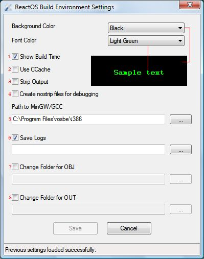

1.
You can
switch on/off showing the time the build process needed.
2.
A new feature
in Version 1.0 is the usage of CCache which can speed up the build
process for ~5-10%
for a cost of ~1,5 GB of Cache size (BEWARE: First Build Process is
waay slower due to Cache building process. The first sped up build
process will be the second one).
3.
Stripped Output might help if you want
to use ReactOS on a PC with less than 48 MB RAM, because stripped apps
use less RAM and are smaller.
4.
Here you can set another GCC Compiler as the Active one in RosBE.
5.
You can switch off/on the logging and/or change te Path where the logs
will be saved to.
6.
and 7.
are mainly made for Speed up the Build Process. By Changing the Output
to a RAMDisk you can Speed up the building for about 10-15%. But it
will cost VERY MUCH RAM. The fastest way would be to save the Source
(~300MB), the LOGs (some KB), the Object Files (!!!~2.3 GB!!!) and the
Output (~200 MB) to RAM Additionally you need some MB as Temp File
Buffer, too. So a maximum speedup would cost ~2.8 GB RAM. If you have
so much RAM, be happy and install a RAMDisk on it for building.
Otherwise you might need to keep OBJ on HDD.